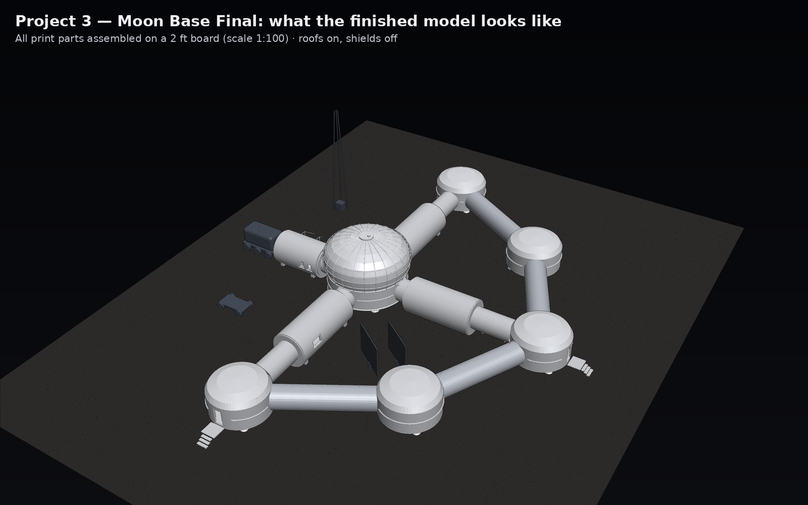
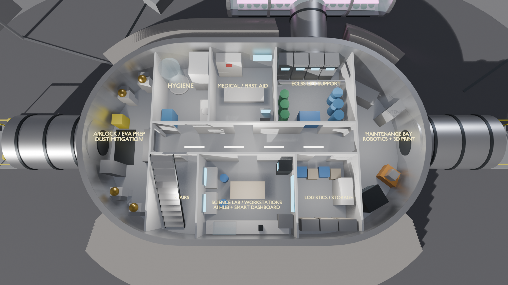
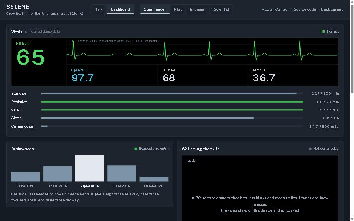
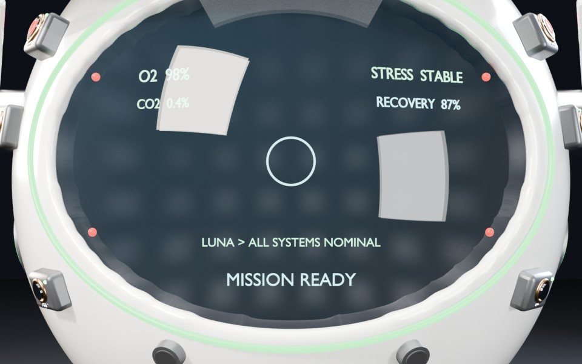
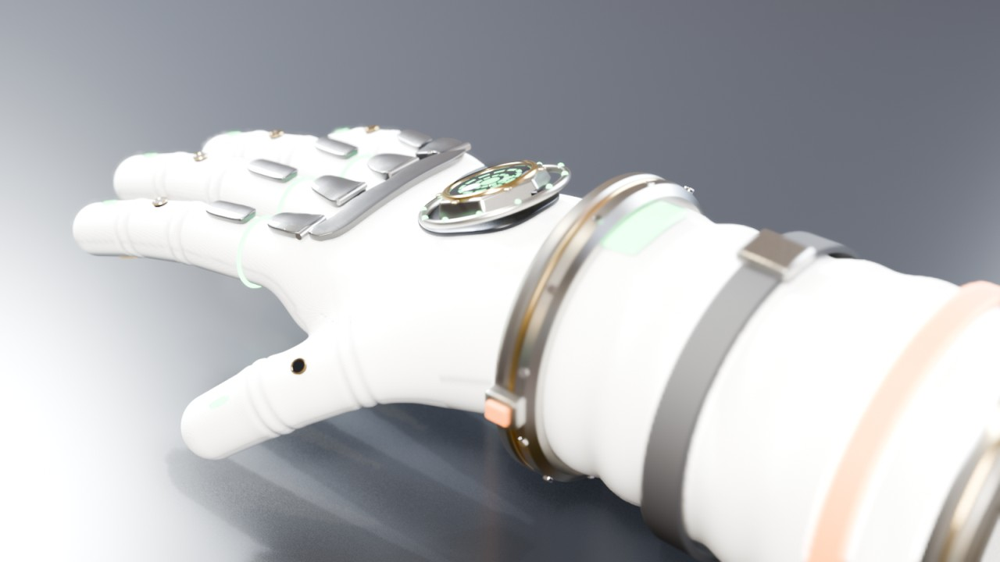
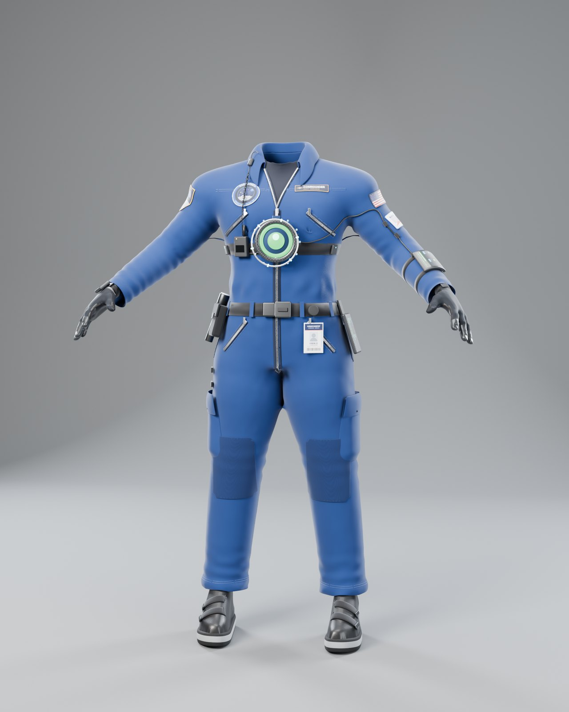
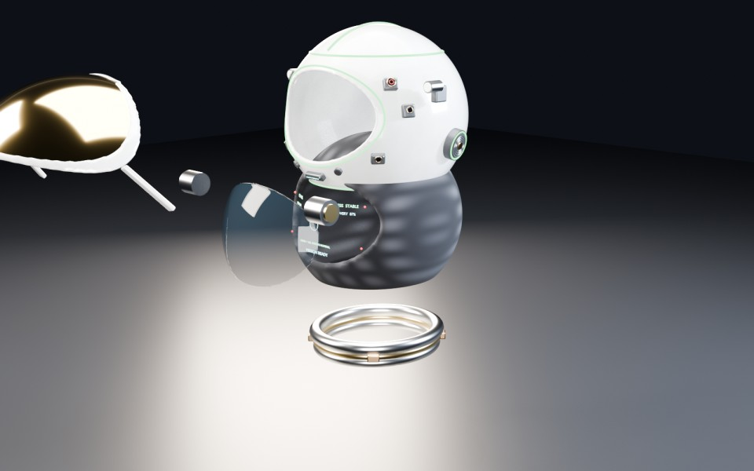

Caring for the People Who Live on the Moon
Long stays on the Moon are hard on people, not just machines. Isolation, poor sleep, cramped rooms and the same faces every day wear crews down. NASA's Human Research Program counts behavioral health among the risks of long missions.

- Site
- Rim of Shackleton crater, 89.9° S: near-constant sunlight, water ice in the shadows below
- Crew
- 4 people, 90 days
- Layout
- 10.2 m shared core for work, meals and exercise; four private crew quarters; command, greenhouse, medical + storm shelter, airlock
- Space
- About 185 m³ of private space each

Blender cutaway: airlock, hygiene, medical, life support, logistics and the science lab around the core.
A shared core to live in, and a private space that is truly yours.
Help They Are Free to Turn Down
The AI reads simple signals (sleep, heart rate, how often people meet) and watches for six conditions: anxiety, low mood, conflict, fatigue, loss of autonomy and monotony. It answers in small steps:
Silent. It quietly changes the light or sound in the room.
An offer. It suggests a break, a call home or greenhouse time. A "no" starts a cool-down.
A human. Only when something is serious does it bring in the Chief Medical Officer, and it always tells the person first.
8 rules it can never break. There are no cameras or microphones where people sleep, a "no" always stops the AI, and humans make the decisions.

Live vitals, sleep, exercise and radiation dose. Crew can talk to SELENE by voice, and its 30-second camera wellbeing check stays on the device. jaigod.github.io/lunar-crew-monitor
The AI Goes Where the Crew Goes
LUNA-X carries the habitat's wellness AI outside the walls, so someone is watching for fatigue, stress and danger even when nobody says a word.

Cognitive Helmet
Eye tracking, a calm HUD, and an automatic crew alert after a fall.

Wellness Glove
Grip and tremor sensing, plant scans, gesture control.

Mobility Boot
Smart sole reads gait and balance; path lights guide you home.

Crew Uniform
Everyday habitat wear with a chest module and a sleeve tablet.

Helmet layers: gold sun visor, smart-glass visor, ceramic shell, shock liner, neck ring.
Every step our astronauts take depends on keeping the people taking them safe and well.